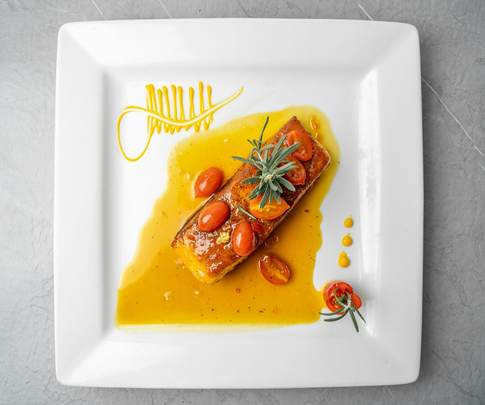
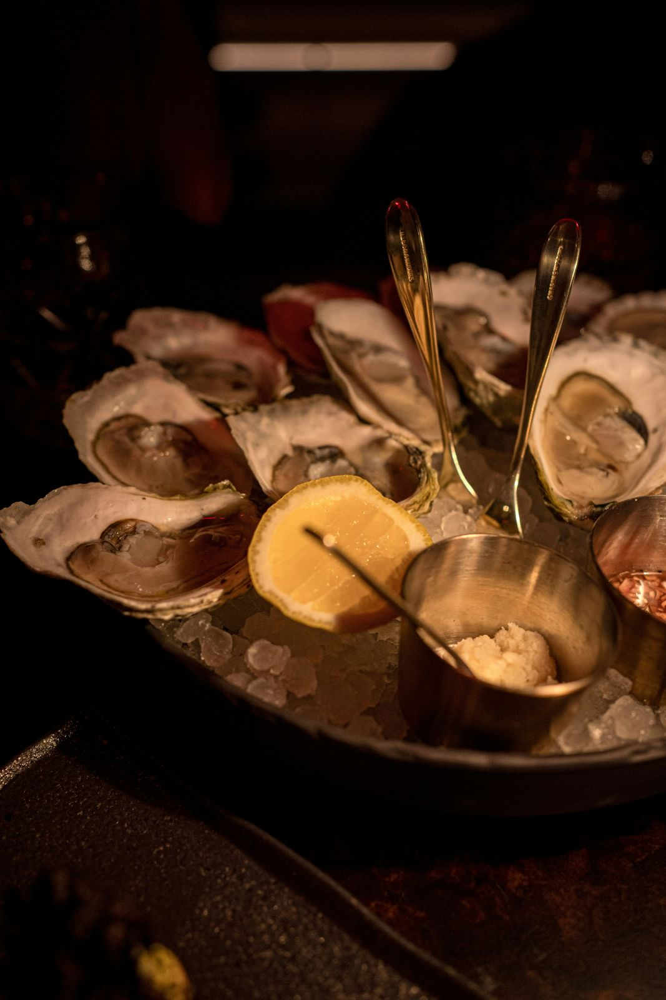

Œuf parfait, crème de cèpes
Œuf de la ferme de la Gâtine cuit à 64 °C, crème de cèpes, croûtons au beurre noisette.
Une cuisine de saison, faite maison du fond de sauce au dessert, avec des produits de producteurs nantais. L'ardoise change chaque jour, la carte à chaque saison.
Entrée + plat ou plat + dessert : 23 € · Les trois : 28 €

Léonie Garnier a ouvert la Maison Léonie en 2019, après dix ans dans des brasseries parisiennes. Elle a choisi un ancien atelier de tapissier, à deux pas du marché de Talensac, pour y cuisiner ce qu'elle aime : des plats de bistrot généreux, des légumes qui ont du goût, des poissons de la côte atlantique.
Chaque matin, elle fait son marché avant d'écrire l'ardoise. En salle, Hugo vous conseille un vin de Loire au verre et connaît par cœur l'histoire de chaque producteur.


Œuf de la ferme de la Gâtine cuit à 64 °C, crème de cèpes, croûtons au beurre noisette.
Poisson de la criée de La Turballe selon l'arrivage, beurre blanc monté minute, légumes du maraîcher.
Amandes, rhum ambré et glaçage fin, servi avec une crème crue de la laiterie voisine.
On y vient pour le beurre blanc, on revient pour l'accueil. L'ardoise change tous les jours et on n'a jamais été déçus. Le gâteau nantais vaut à lui seul le détour.
Viandes d'origine France, poissons de la côte atlantique, carte des allergènes disponible sur demande et en ligne.
32 couverts en salle, 16 en terrasse aux beaux jours. Les tables se remplissent vite le jeudi et le vendredi.